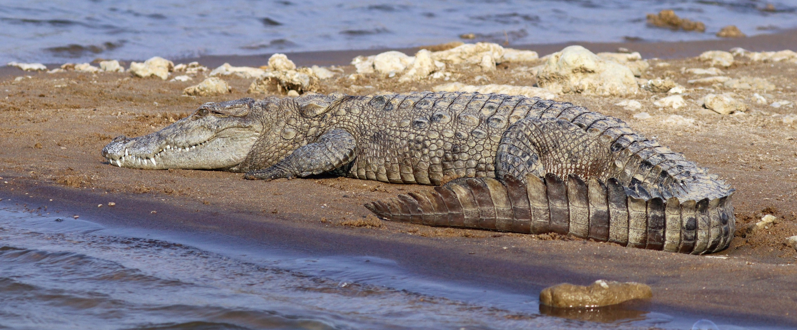
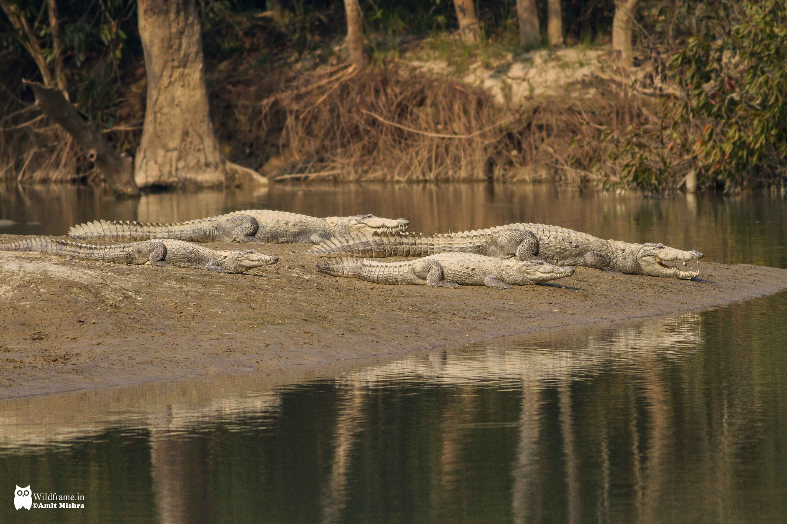
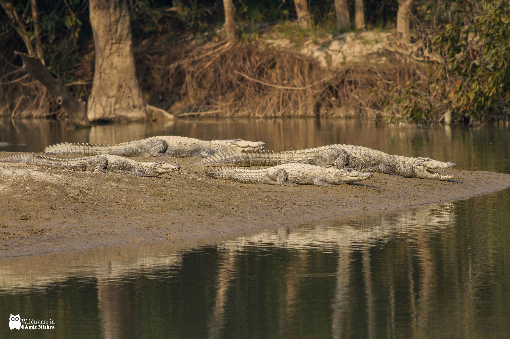

Crocodile Sanctuary

Mugger Crocodiles
Basic Information
The mugger crocodile (Crocodylus palustris), also called marsh crocodile, broad-snouted crocodile and mugger, is a crocodilian native to freshwater habitats from southern Iran to the Indian subcontinent. It is extinct in Bhutan and Myanmar and has been listed as Vulnerable on the IUCN Red List since 1982.
Characteristics
Mugger crocodile hatchlings are pale olive with black spots. Adults are dark olive to grey or brown. The head is rough without any ridges and large scutes around the neck that is well separated from the back. Scutes usually form four, rarely six longitudinal series and 16 or 17 transverse series. The limbs have keeled scales with serrated fringes on outer edges, and outer toes are extensively webbed.
The mugger crocodile is considered a medium-sized crocodilian, but has the broadest snout among living crocodiles. It has a powerful tail and webbed feet. Its visual, hearing and smelling senses are acute.
Adult female muggers are 2 to 2.5 m (6 ft 7 in to 8 ft 2 in) on average, and male muggers 3 to 3.5 m (9 ft 10 in to 11 ft 6 in). They rarely grow up to 5 m (16 ft 5 in). The largest known muggers measured 5.63 m (18 ft 6 in). The largest zoological specimen in the British Museum of Natural History measures 3.7 m (12 ft 2 in).[15
Behavior
The mugger crocodile is a powerful swimmer that uses its tail and hind feet to move forward, change direction and submerge. It belly-walks, with its belly touching ground, at the bottom of waterbodies and on land. During the hot dry season, it walks over land at night to find suitable wetlands and spends most of the day submerged in water. During the cold season it basks on riverbanks, individuals are tolerant of others during this period. Territorial behaviour increases during the mating season.
_in_Chabahar,_Iran-_by_Hadi_Karimi.jpg) 

Mugger crocodiles have been documented using lures to hunt birds. This means they are among the first reptiles recorded to use tools. By balancing sticks and branches on their heads, they lure birds that are looking for nesting material.
Reproduction
Female muggers obtain sexual maturity at a body length of around 1.8–2.2 m (5.9–7.2 ft) at the age of about 6.5 years, and males at around 2.6 m (8 ft 6 in) body length. The reproduction cycle starts earliest in November at the onset of the cold season with courtship and mating. Between February and June, females dig 35–56 cm (1.15–1.84 ft) deep holes for nesting between 1 and 2,000 m (3.3 and 6,561.7 ft) away from the waterside. They lay up to two clutches with 8 to 46 eggs each. Eggs weigh 128 g (4.5 oz) on average.
Laying of one clutch usually takes less than half an hour. Thereafter, females scrape sand over the nest to close it. Males have been observed to assist females in digging and protecting nest sites. Hatchling season is two months later, between April and June in South India, and in Sri Lanka between August and September. Then females excavate the young, pick them up in their snouts and take them to the water. Both females and males protect the young for up to one year
Healthy hatchlings develop at a temperature range of 28–33 °C (82–91 °F). Sex ratio of hatched eggs depends on incubation temperature and exposure of nests to sunshine. Only females develop at constant temperatures of 28–31 °C (82–88 °F), and only males at 32.5 °C (90.5 °F). Percentage of females in a clutch decreases at constant temperatures between 32.6 and 33 °C (90.7 and 91.4 °F), and of males between 31 and 32.4 °C (87.8 and 90.3 °F).